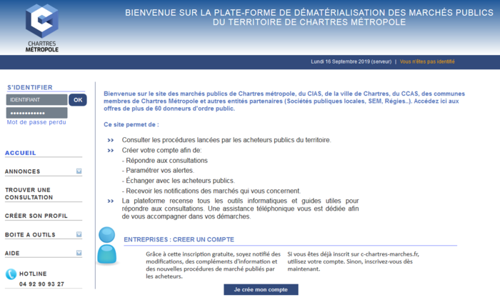

Ville de Chartres
Ville de Chartres
Ville de Chartres
Ville de Chartres


Administration

Transport et Stationnement

Santé

Enseignement

Action Sociale

Marchés Publics
Administration
Vos démarches
Refaire votre passeport, carte d'identité, certificats divers, se marier, etc. Toutes les démarches !
Coronavirus COVID-19
Éviter les regroupements, la prise de rendez-vous devient également obligatoire dans les cas suivants :> Retrait de la carte d’identité ou passeport : demande de rendez-vous à formuler auprès du Guichet unique 02 37 23 40 00 du lundi au vendredi de 9 h à 17 h et le samedi de 9 h à 12 h 30.
> Changement de nom ou de prénom : demande de rendez-vous à formuler auprès du Guichet unique 02 37 23 40 00 du lundi au vendredi de 9 h à 17 h et le samedi de 9 h à 12 h 30. Vous serez reçu par un officier d’état civil.
Transport et Stationnement
Se déplacer, stationner ou s'orienter à Chartres
Santé
Prendre soin de sa santé et se soigner à Chartres
CENTRE HOSPITALIER LOUIS PASTEUR
4, rue Claude Bernard
28630 Le Coudray
Tél. 02 37 30 30 30.
Site : ch-chartres.fr
CENTRE MÉDICO PSYCHOLOGIQUE
Consultation par des psychiatres, psychologues, infirmiers psychiatriques et travailleurs sociaux.
1, rue Gabriel-Lelong
28000 Chartres
Tél. 02 37 26 57 00.
CSAPA-CICAT
Prise en charge des sujets majeurs ou mineurs présentant une dépendance à des produits psycho-actifs licites ou illicites. Prévention, formation, écoute parentale, prise en charge ambulatoire et médico psycho sociale.
Du lundi au vendredi de 10 h à 17 h.
10 rue de la maladerie
28630 Le Coudray
Tél. 02 37 21 48 29.
Courriel : secretariatchartres@cicat.fr
DISPOSITIF PASS – PERMANENCE D'ACCÈS AUX SOINS DE SANTÉ
Hôpital Louis Pasteur
Tous les jours sauf le mercredi.
Tél. 02 37 30 32 57.
Foyer d'Accueil Chartrain
Sur rendez-vous.
Tél. 02 37 88 40 00.
Centre Médico Psychologique
Tél. 02 37 26 57 00.Enseignement
Inscrire votre enfant à l'école, l'université, conservatoire, etc.
Action Sociale
L'Action Sociale à Chartres
Marchés Publics
Attention : nouvelle plateforme des Marchés Publics
La plateforme de dématérialisation des marchés publics à changé et se trouve à l'adresse suivante : c-chartres-marches.frSi vous souhaitez proposer vos services à la Ville de Chartres, à Chartres métropole, au CCAS et au CIAS, vous devez y créer, ou y recréer, un compte pour consulter les offres.
Service Marchés Publics
Pour toute remise de plis sur support papier, et afin d'en assurer la bonne réception, les candidats sont invités à suivre les recommandations suivantes.
Les plis remis contre récépissé (par le candidat ou un transporteur) doivent être déposés au Service des marchés publics (ouvert de 9 h à 12 h et 14 h à 17 h) à l'adresse suivante :
Service marchés publics
1, avenue Joseph-Pichard
28000 Chartres
Les plis transmis par voie postale doivent être envoyés à l'adresse suivante :
Hôtel de Ville Service Marchés Publics
Place des Halles
28019 Chartres Cedex
Sauf indication contraire dans la consultation, aucun pli ne pourra être déposé à l'accueil de la Mairie, place des Halles à Chartres, ou de Chartres métropole, rue Charles-Brune à Lucé.
Rappel : Les plis doivent parvenir à destination avant la date et l'heure indiquées dans la consultation à laquelle le candidat soumissionne.
Accès à l'ancienne plateforme
> Accéder à l'ancienne plateforme des marchés publics de Chartres métropole (nouvelle fenêtre).